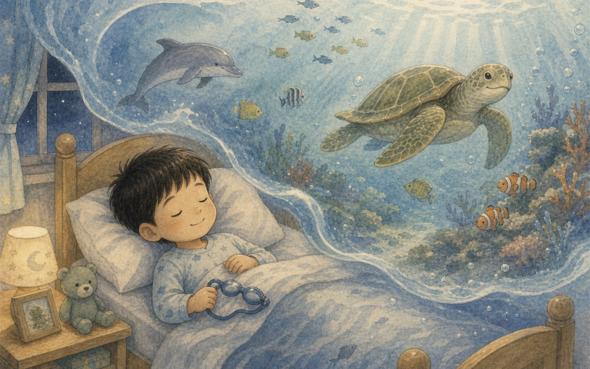
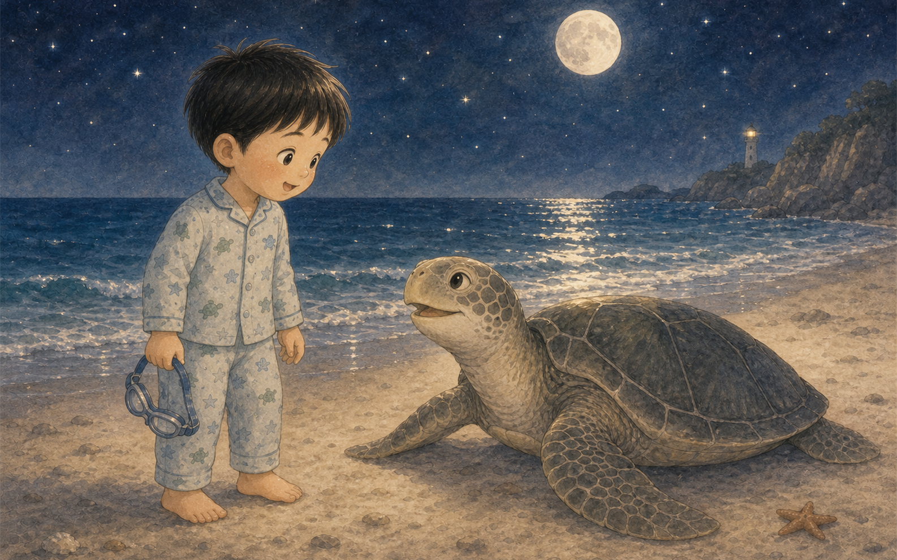
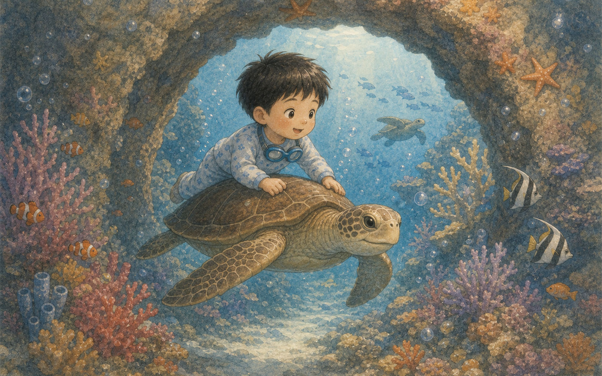
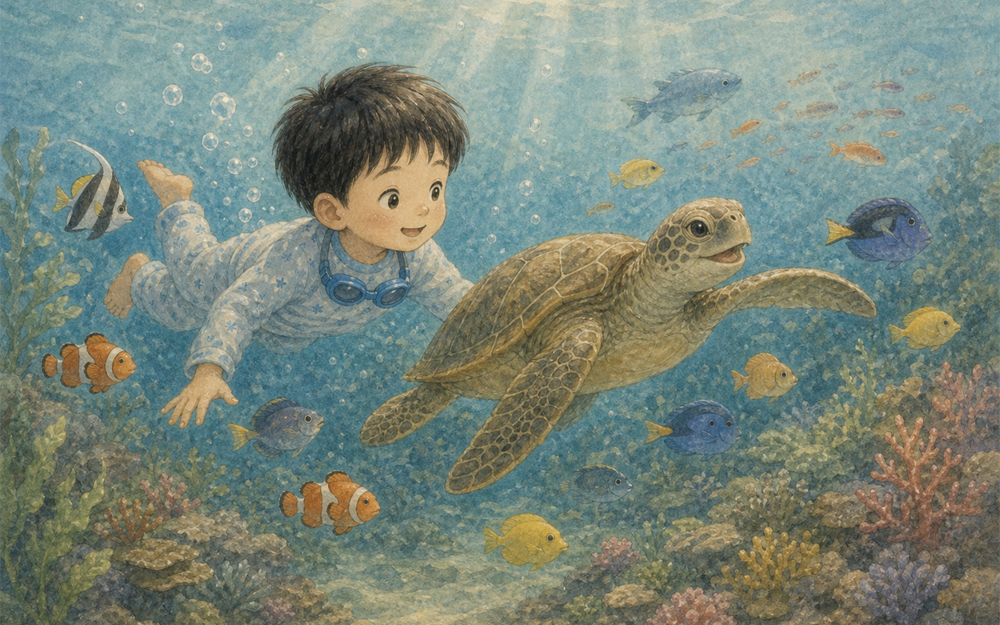
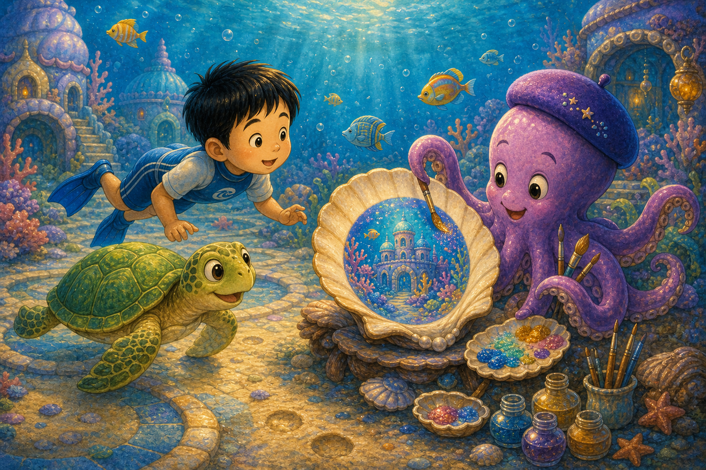
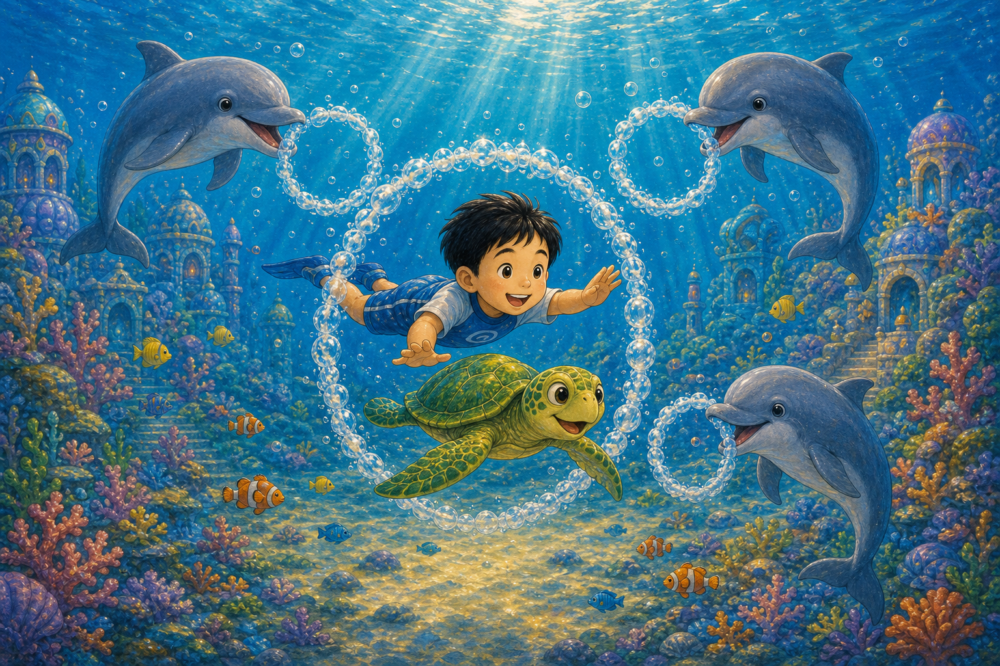
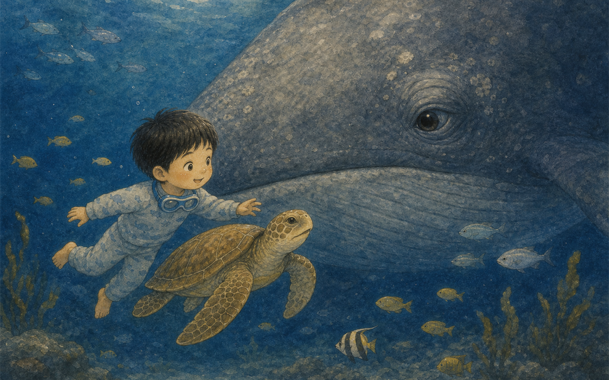
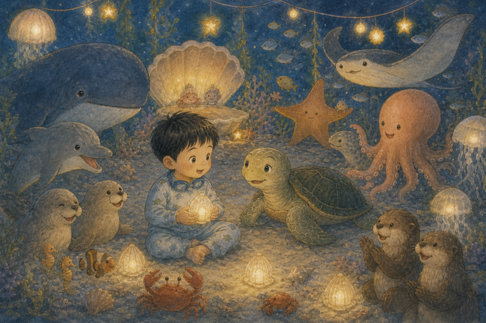
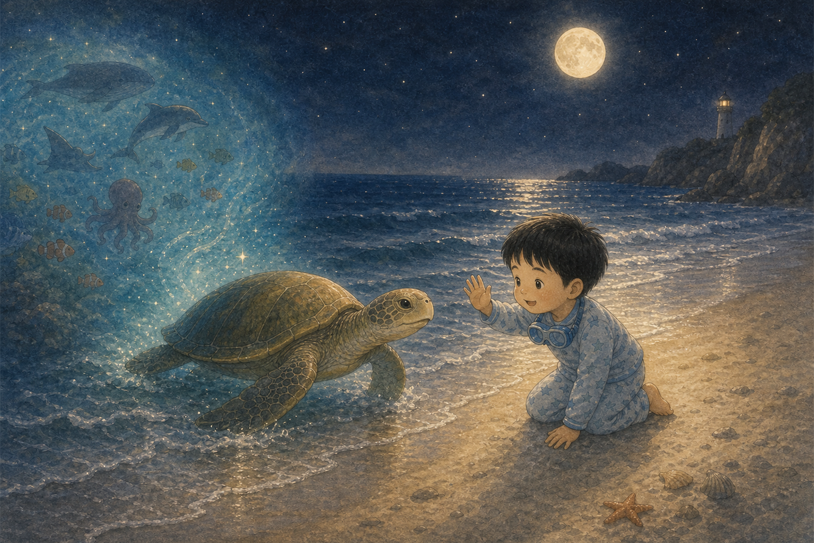
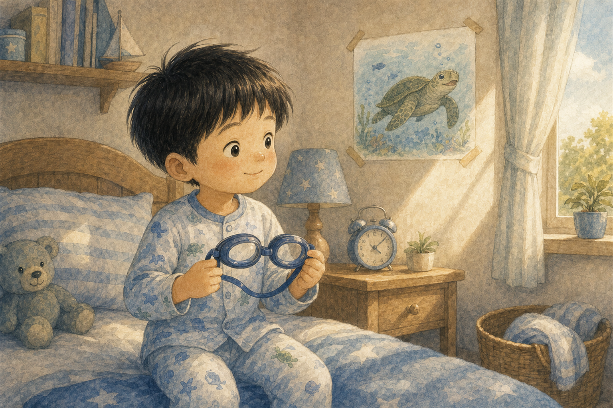

수영을 좋아하는 지우
지우는 물속에서 팔을 쭉 뻗는 걸 좋아했어요. 밤이 되자 수경을 꼭 쥐고 잠이 들었지요.
그때 파란 바다 냄새가 꿈속으로 살랑살랑 들어왔어요.

지우는 물속에서 팔을 쭉 뻗는 걸 좋아했어요. 밤이 되자 수경을 꼭 쥐고 잠이 들었지요.
그때 파란 바다 냄새가 꿈속으로 살랑살랑 들어왔어요.

꿈속에서 지우는 반짝이는 해변에 서 있었어요. 초록 거북이가 파도 사이에서 고개를 내밀었어요.
“안녕, 지우야. 바다 나라에 놀러 갈래?”

지우는 거북이 등에 살포시 올라탔어요. 물속에는 산호로 만든 예쁜 문이 열려 있었지요.
“꼭 잡아. 여기는 모두가 친구인 바다 나라야.”

산호 광장에는 노란 물고기, 파란 물고기, 주황 물고기가 헤엄치고 있었어요. 지우는 손을 흔들었어요.
“너희랑 같이 수영하니까 바다가 무지개 같아!”

보라색 문어는 조개껍데기 위에 동그란 그림을 그리고 있었어요. 먹물은 무섭지 않고 예쁜 색으로 반짝였어요.
“바다에서는 파도도 그림이 된단다.”

돌고래 세 마리가 동그란 물방울 고리를 만들었어요. 지우는 거북이와 함께 고리 사이를 지나갔어요.
“하하! 수영장이 아니라 진짜 바다 놀이터야!”

깊고 푸른 물속에서 커다란 고래가 천천히 다가왔어요. 고래의 눈은 달빛처럼 다정했어요.
“작은 친구야, 바다는 용기 있는 마음을 좋아한단다.”

물고기, 문어, 돌고래, 고래가 모두 모였어요. 조개 방울이 둥둥 떠오르고 산호 광장이 반짝였어요.
지우는 바다 친구들과 빙글빙글 춤추듯 헤엄쳤어요.

거북이는 지우를 달빛이 비치는 물 위로 데려다주었어요. 바다 친구들은 멀리서 꼬리를 흔들었어요.
“언제든 물을 사랑하는 마음으로 다시 놀러 와.”

아침이 되자 지우는 침대에서 눈을 떴어요. 손에는 파란 수경이 있었고, 마음에는 바다 나라가 반짝였어요.
그날 지우는 수영장 물결 속에서 거북이 친구를 떠올리며 활짝 웃었답니다.